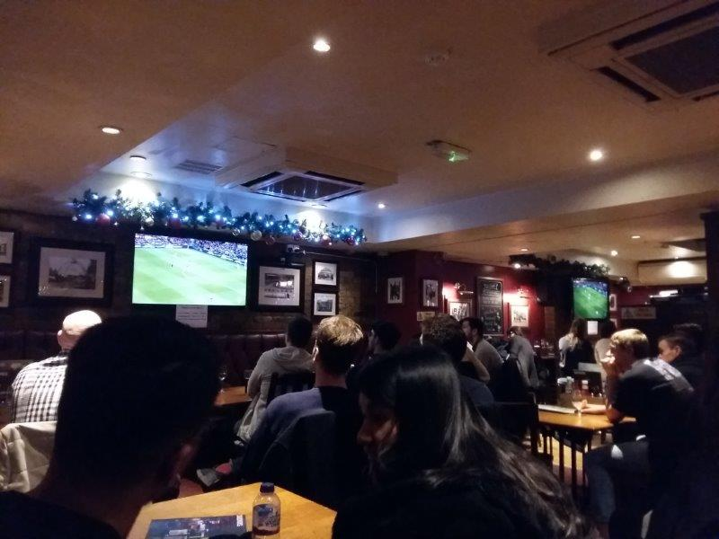

JIMMY BOOZERS' PHOTOS

×

Oxford Street on a Sunday. The closest thing to hell on earth. Thousands of cretins fill the street satisfying their thirst to consume, finding false comfort in their new pair of shoes from Dune, and their new crop top from Zara. My progress is slow, painful small steps behind the mass of zombies, dazzled by the bright lights. Consume, consume, consume. Today I am hungover. I dive in to the Green Man pub hidden just off Oxford street, strategically placed right in between Oxford Circus and Tottenham Court Road tube stations. It's relatively quiet, which is a nice relief. I get a pint in a flash and it's reasonable prices. Guiness 4.45 Lager 4.20 (carling) Impressive considering the location. The football is on and tvs are a plenty, commentary blaring. Underneath each screen a piece of paper proudly displays the games getting shown on that tv for the day. A good idea. If there's a few games on at the same time and you want a specific game you can find out what tv it is on and park yourself in front of it. It's sort of a spoons decor inside. They serve food and the menus are in the typical sickening chain pub manner. But seems good value. You can get a burger and a pint for £7.49. It's a Mitchells & Butlers pub, who also own the abomination that is All Bar One. It's probably the only way they can justify the prices. The fellow clientelle are mostly males, in rows of pairs, parked up and enjoying the game while letting the partners shop in peace. It is a little soulless in here though unfortunately. Just as Im getting comfortable, suddenly and without warning the pub is thrown into darkness. More alarming is that the sky connection is lost, but somehow the tvs are still in flickering and making a strobe effect in part of the bar. A fuse or something affecting the whole street has blown. The pub is only lit through the puggys/bandit machines and some Christmas lights highlighting the location of the bar. A beacon of salvation. Summary If the footballs on pop in. If not there are better more interesting options nearby.
Bevvie Value - 3/5
Football Viewing Arrangements - 4/5
Fellow Clientele - 3/5
Banter & Vibe - 3/5
57 Berwick St, Soho, LONDON W1F 8SR, United Kingdom